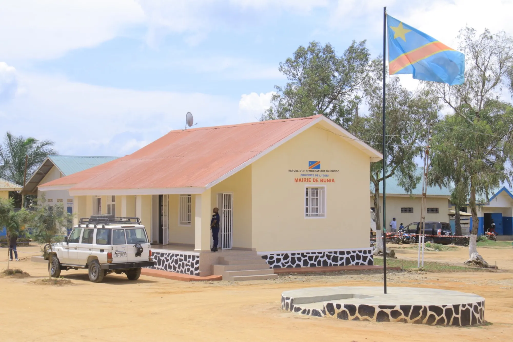
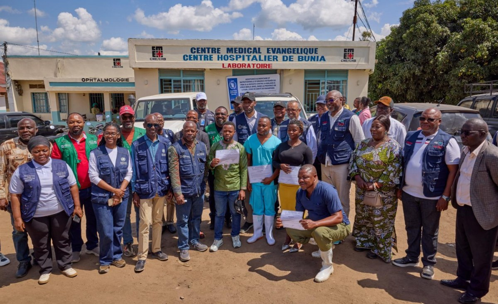
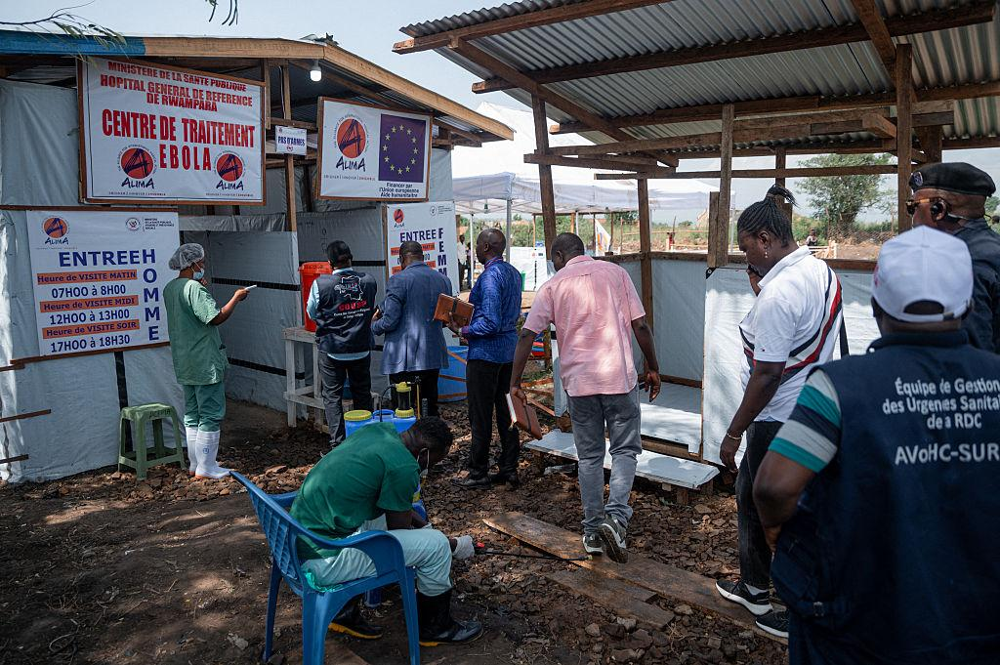

Health and Community Support
Supporting health services and improving access to medical care for communities across Ituri Province.
Welcome to the Government of Ituri Province
Find official information, public services, projects and news from Bunia and across the province.

Birth certificates, marriage certificates, identity documents and other civil registration services.

Health centres, medical services and prevention campaigns for communities across Ituri.

Information about schools, enrolment, education programmes and learning opportunities.

Support for farmers, traders, businesses and economic activities across Ituri Province.
Supporting health services and improving access to medical care for communities across Ituri Province.

Improving road infrastructure to support transportation, connect communities, and facilitate local trade.

Showcasing important public infrastructure in Bunia, including the National Airport of Bunia, which supports transport and connectivity in Ituri Province.

Dear People of Ituri,
Welcome to the Ituri Provincial Government website. It is a pleasure to connect with you through this platform, which provides information about our province, its administration, public services and development activities.
Ituri is a province with great potential, rich cultural diversity and hardworking communities. Our shared responsibility is to promote peace, unity, security and sustainable development for the benefit of all citizens.
I encourage everyone to remain informed, participate in community development and work together towards a peaceful and prosperous Ituri.
Thank you for your continued cooperation and commitment to our province.
Major General Gaby Kasongo Mulumba Batoka
Military Governor of Ituri Province

A rapid response team has been deployed to Mambasa and Mandima in Ituri to strengthen the response to the Ebola outbreak and support affected communities.